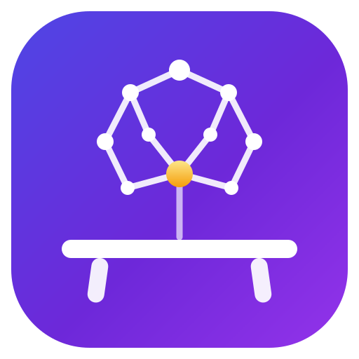

A local, dependency-free memory & context layer for AI coding agents — a persistent cross-tool brain, a full-text code index, and setup diagnostics, all over MCP.
Works with Claude Code·Codex·Gemini CLI
Every AI coding session starts from zero: no memory of yesterday's decisions, no view across your repos, no idea whether its own setup is broken. Agent Workbench fixes all three — locally, deterministically, with zero dependencies.
Durable notes — decisions, facts, gotchas, todos — stored in SQLite FTS with porter stemming, shared across all your AI tools and sessions. What Claude learns today, Codex recalls tomorrow. Every note carries a source breadcrumb (ticket, Slack thread, SHA-pinned permalink) so nothing becomes folklore.
Full-text bm25 search across all your repos in one call, with incremental refresh. No embeddings, no API calls — deterministic lexical retrieval; your agent does the semantic reasoning on top. Point it at any directories via AGENT_WORKBENCH_INDEX_ROOTS.
Scans your machine for leaked secrets, broken MCP configs, over-broad permission allowlists, and stale agent docs. Because the agent's environment is part of the system too.
Standing instructions make agents likely to use the brain; four Claude Code hooks make it guaranteed. The loop closes at the harness level — no model goodwill required.
The hooks capture knowledge from interactive work. Skills answer the questions a brain full of durable facts cannot, and brain-primed agent types carry recall into subagents — which receive no hooks at all.
| Skill | What it does |
|---|---|
/standup | "What did I do yesterday?" — merges git, PRs, Slack, and calendar into a paste-ready Done / Today / Blockers. The brain stores durable facts, not an activity log. |
/brain-harvest | Weekly backfill: scans merged PRs, resolved tickets, and Slack for durable knowledge the hooks missed. Approval-gated. |
/postmortem | Incident reconstruction from evidence: timeline, blameless five-whys, action items with owners. |
/why | Code archaeology: blame → commit → PR → ticket → Slack → brain, with a cited chain and an honest dead-end when no reason survives. |
/meeting-prep | One-page brief for the next calendar event: what changed since last time, what you owe and are owed. |
| Agent type | What it does |
|---|---|
scout | Read-only investigator: recalls notes before searching the filesystem, cites path:line and brain#id, and reports notes the code contradicts. |
implementer | Implements against recorded decisions, gotchas, and preferences; matches surrounding style; proves the change with the project's own checks. |
adversary | Loads the project's known failure modes before reading a diff, then reports only findings with a concrete failure scenario. |
A subagent gets no SessionStart priming and no prompt-recall injection, and inherits none of the parent's context — so recall has to live in its own system prompt or it never happens.
One requirement: Python ≥ 3.10. No pip installs, no API keys, no network calls.
git clone https://github.com/chud-lori/agent-workbench.git
cd agent-workbench
./setup.shsetup.sh detects your harnesses (Claude Code / Codex / Gemini CLI), registers the MCP server, installs the standing instructions, wires the hooks, and builds the code index. Idempotent — re-run anytime. ./uninstall.sh reverses everything but keeps .state/: your brain survives.
| Tool | What it does |
|---|---|
brief_task | The task-start context pack: one call merging code hits, doc hits, matching brain notes, likely repos, and runnable commands — with a warning when a local checkout diverges from deployed reality. |
brain_remember / brain_recall | Store and search durable notes (decision / fact / gotcha / preference / todo / reference). supersedes retires corrected notes; thread= gives a chronological storyline digest. |
brain_amend / brain_resolve / brain_promote | Correct a note in place, mark a todo done (kept, hidden), or promote a proven personal note into a team playbook. |
code_search | bm25 keyword search across every indexed repo at once. |
recent_activity | Commits you made in a time window across every local repo, all branches — so unpushed work gh cannot see still shows up. Linked worktrees fold into their main checkout, so nothing is counted twice. |
repo_state | Branch, ahead/behind origin, dirty state, and whether you are standing in a linked worktree — run before claiming how production behaves. |
search_knowledge | Live search over agent docs: CLAUDE.md, AGENTS.md, SKILL.md, READMEs. |
doctor_report / mcp_health | Secrets on disk, broken MCP configs, over-broad permissions, stale docs. |
Every tool has a CLI twin (python3 run_cli.py …) for shells, cron jobs, and hooks.
.state/; the index rebuilds anytime, and the brain exports to markdown.brain_promote.